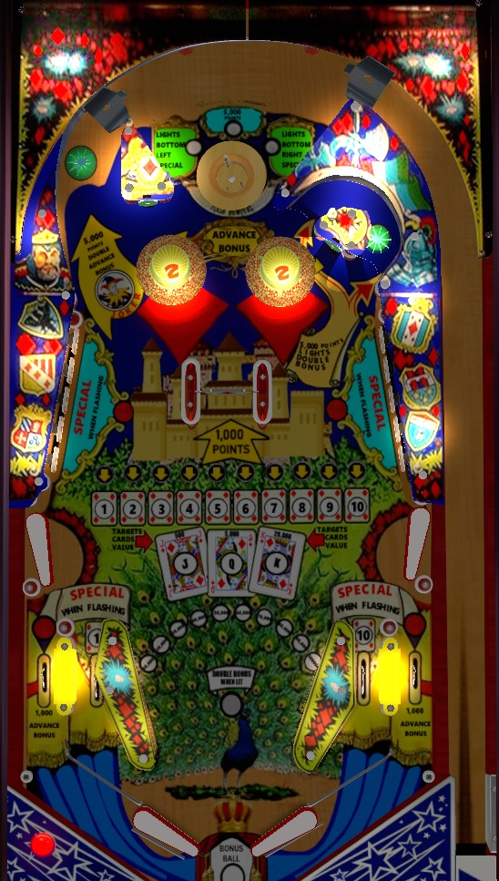

House of Diamonds is the 4-player solid state version. Queen's Castle is the 1-player electromechanical version with the same layout and similar rules but most scores multiplied by 10.
Return to the top of the table as frequently as possible, preferably by the upper left Joker shot but through the spinner is acceptable as well. The upper left shot scores 2 bonus advance, spots whichever number has an arrow pointing at it, and leads the ball to the top saucer. The top saucer can score 5,000 points or light one of the out lanes for a bonus ball, effectively serving as a drain shield. Complete the 1-10 numbers via standup targets or the Joker shot to work toward a Special.
The top saucer always scores 1 bonus advance, in addition to the lit award. The lit award at the saucer changes with each spin of the center spinner. The 5,000 points (or 50,000 on Queen's Castle) award is self-explanatory; the "lights bottom special" awards lit the left or right out lane for an extra ball.
Hit a standup target to light the corresponding 1-10 number. Game settings allow for the 2 and 4, as well as the 6 and 8, to be tied together so that lighting either card in each of those pairs gives credit for both. Lighting all of 1-10 lights the next card in the Jack-Queen-King sequence, which resets the 1-10 numbers and increases the standup target value. If none of J-Q-K are lit, standup targets score 50 points; this is increases to 500 with J lit, 5,000 with Q lit, and 20,000 with K lit. When either the Q or K is lit, the Special when Flashing in front of the standup target banks will begin flashing; this indicates that the next completion of 1-10 will score a free game and reset both the 1-10 sequence and the J-Q-K sequence.
(On Queen's Castle, the target value sequence is 100 - 1,000 - 10,000 - 50,000.)
The upper left Joker shot scores 5,000 points (50,000 on Queen's Castle), 2 bonus advances, and spots whichever number is currently indicated by the lit arrow. The arrow moves with each spin of the center spinner. In the VPX version of House of Diamonds, the arrow will not point at a number you have already collected, but in the version of this table from Magic Pixel within the Zaccaria Pinball video game, the arrow can point at an already-collected number; I am not sure which behavior is correct. The Joker shot is always a good thing to go for since it scores points, adds bonus, and returns you to the top of the table for another chance at lighting the out lanes for extra ball.
All collected 1-10 numbers and lit J-Q-K cards are preserved from ball to ball.
Scores 1,000 points per spin (10,000 per spin on Queen's Castle) and moves the arrow and the top saucer award with each spin. This can be pretty good value if the spinner spins well, but you're at very high risk if you miss the shot and bang the ball off the posts on either side of the spinner.
Scores 5,000 points and lights 2x bonus on House of Diamonds. Scores 10,000 points and lights 10x bonus on Queen's Castle.
House of Diamonds has a conventional in/out lane setup. In all versions of the game, out lanes score 1,000 points and 1 bonus advance, and can be lit for an extra ball by the top saucer. The in lanes score 500 points and are alternate ways to score the 1 (left) or 10 (right) in the 1-10 sequence.
The in lanes are cut off at the corners similar to other many other games of the mid-late 1970s. Be careful with how you trap the ball, because it can very easily roll up the flipper and in lane, fall through the gap, and end up in the out hole. Conversely, pins in the out lanes allow balls to be nudged through this game and be saved back into the in lane. Live catches, drop catches, and dead bounces are very important for ball control.
Bonus is advanced once by the top saucer and twice by the Joker upper left shot. Each bonus advance is worth 10,000 points instead of the standard 1,000. Max base bonus is 100,000 points in all versions of the game. The upper right u-turn lane gives the game's only bonus multiplier, which is 2x on House of Diamonds and 10x on Queen's Castle, for max bonuses of 200,000 or 1,000,000 respectively. Base bonus and multiplier are never carried from ball to ball. The first step of the bonus is not given for free, so it is possible to drain with 0 end of ball bonus.